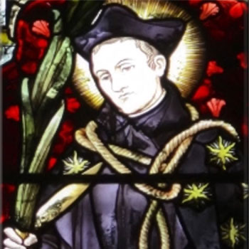

Isusovački blaženici
Svećenik
Bl. Toma Cottam
1549. – 1582.
Engleski obraćenik i isusovac vratio se kao svećenik u domovinu, predao vlastima radi zaštite dobročinitelja te nakon zatvora i mučenja podnio smrt.
Tekst je preveden i prilagođen uz pomoć umjetne inteligencije.

Izvor slike
- Spomendan
- 30. svibnja
- Zaštitništvo
- Nije navedeno u izvoru
- Životni vijek
- 1549. – 1582.
- Djelovanje
- Obrazovanje i poučavanje vjere · Obraćenje i novi počeci · Progoni i progonstvo · Mučeništvo
- Razdoblje
- 16. stoljeće
- Ulazak u Družbu
- Travanj 1579., Rim
- Svećeničko ređenje
- 28. svibnja 1580., Soissons
- Rođenje — dostupni podaci
- 1549.; dan i mjesec nisu potvrđeni u provjerenom izvoru.
- Mjesto rođenja
- Engleska
- Datum smrti
- 30.05.1582.
- Mjesto smrti/mučeništva
- Tyburn, London, Engleska
- Okolnosti smrti/mučeništva
- Pogubljen vješanjem i sakaćenjem zbog katoličkoga svećeništva i djelovanja za progona.
- Uloga
- Svećenik
- Mučenik
- Da
- Ostale oznake
- Mučenik engleskih protukatoličkih progona
- Pripadnost
- Isusovac
- Drugi oblici imena
- Thomas Cottam · Thomas
Životopis
Toma Cottam rođen je 1549. u protestantskoj obitelji u Lancashireu. Završio je studij u Oxfordu i radio kao učitelj u Londonu. Prijateljstvo s katolikom Thomasom Poundom pomoglo mu je da 1575. prihvati katoličku vjeru i razmotri svećenički poziv. Godine 1577. otišao je na studij u Douai. Nakon đakonskoga ređenja pristupio je isusovačkome novicijatu u Rimu u travnju 1579., želeći biti misionar u Indiji.
Bolest je promijenila njegove planove. Poslan na sjever radi oporavka, u Lyonu je upoznao engleskoga uhode Sledda. Taj je čovjek, predstavljajući se prijateljem, pribavio podatke o njemu i dojavio ih vlastima. Cottam je 28. svibnja 1580. zaređen u Soissonsu. Pri dolasku u Englesku prepoznat je i uhićen.
Katolički pravnik Humphrey Ely, kojemu je bilo naloženo da ga dopremi vlastima, omogućio mu je bijeg. Kada je doznao da Elyju zbog toga prijeti istraga, Cottam se sam predao. Zatočen je u Marshalseaju, zatim u Toweru i podvrgnut mučenju. S Edmundom Campionom osuđen je u studenome 1581., ali je na pogubljenje čekao još šest mjeseci.
U zatvoru se obratio poglavaru i bio prihvaćen u englesku isusovačku misiju. Dana 30. svibnja 1582. na Tyburnu je pogubljen s trojicom dijecezanskih svećenika. Prije smrti molio je s prisutnim katolicima; na gubilištu je započeo Očenaš i Zdravomariju. Njegovo je tijelo oskvrnuto kako vjernici ne bi uzimali relikvije. Papa Lav XIII. proglasio ga je blaženim 9. prosinca 1886.
Život i nasljeđe
Cottamov prvotni misijski plan bio je usmjeren prema Indiji, ali je bolest promijenila put. Povratak prema sjeveru Europe doveo ga je u doticaj s doušnikom još prije engleskoga iskrcavanja. Njegova odluka da se preda kako ne bi ugrozio čovjeka koji mu je omogućio bijeg važan je osobni korak. Čekanje na izvršenje presude trajalo je mjesecima nakon zajedničkoga suđenja s Campionom. Zato njihova povezanost ne znači da su pogubljeni istoga dana ili nakon jednako dugoga zatočenja.
Tekst je preveden i prilagođen uz pomoć umjetne inteligencije.
Pročitaj više na izvornoj stranici ↗